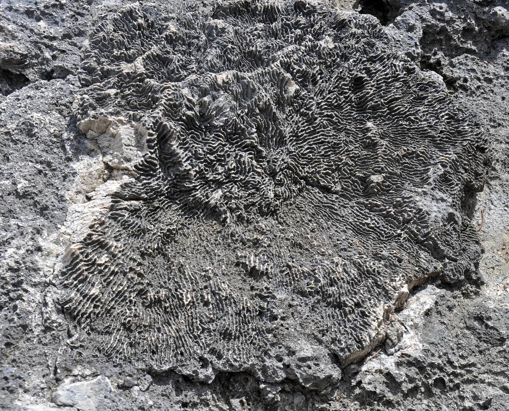
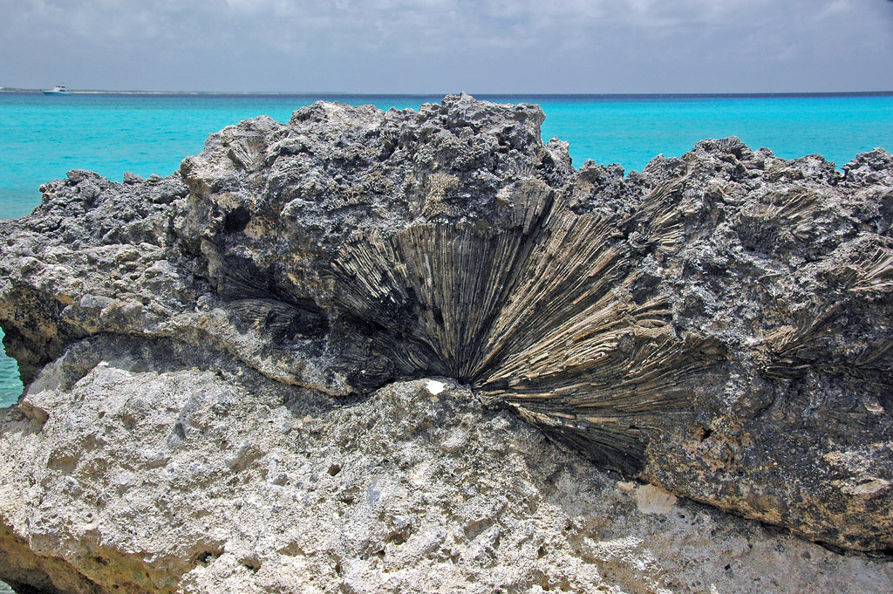
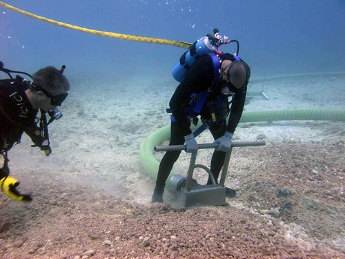

El exoesqueleto lo construye con carbonato de calcio (corales duros), con espículas,
que es calcio cristalizado en forma de espigas (corales blandos), o con proteínas
(corales negros), y se denomina «coralite» o casa del pólipo.
En algunas especies, existe una parte del esqueleto que se encuentra en el centro y
debajo de la boca (columnela).

El cuerpo generalmente tiene forma de tubo, aunque puede presentarse redondo o
alargado, y consta de dos extremos (oral y aboral).
El extremo oral tiene una abertura (que sirve, a la vez, de boca y de ano) y
una corona de tentáculos que brotan de un disco (disco oral).
Los tentáculos están dotados de células irritantes (cnidocistos) y de células
adhesivas (espirocistos) en las puntas, útiles para capturar alimento.

El otro extremo, el aboral, está adherido al sustrato blando por un pedúnculo
(tallo) o, en el caso de sustratos o fondos duros, por un discopedio (disco).
Su cuerpo está organizado alrededor de una «cavidad gastrovascular» o «celenterón»,
una especie de saco interno dividido en varias secciones (septos).
Tiene unos canales en la boca (sifonoglifos) que facilitan la entrada de corrientes
de agua a la cavidad gástrica.
La pared del cuerpo está formada por tres capas: externa (ectodermis), interna
(endodermis) y una capa media, gelatinosa, llamada mesoglea.

En la capa externa aparecen células epiteliomusculares, que son las encargadas
de generar las contracciones en los músculos (longitudinales, transversales, retractores),
y las estructuras reproductivas (ovocitos y espermatocitos).
Alrededor de la boca, la pared corporal se dobla hacia adentro formando una
faringe (actinofaringe).
Cuenta con células sensoriales cerca de la boca, en los tentáculos y el
discopedio o pedúnculo (base) que le permiten recibir estímulos químicos y táctiles.
No tiene aparato excretor, respiratorio, ni circulatorio. Estas funciones,
al igual que la digestiva, se realizan a través de la cavidad gastrovascular.
Tiene simetría radial (su cuerpo está formado por varias partes alrededor de un eje)